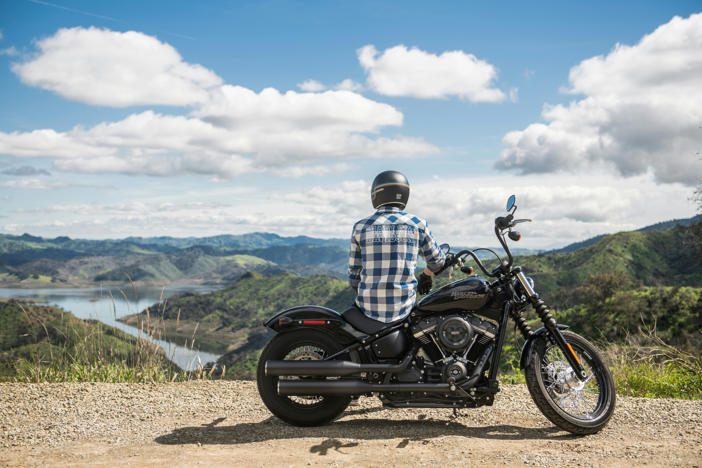

Cultura motera
Una moto para cada forma de rodar
Naked, deportiva, trail o custom: las motos comparten dos ruedas, pero ofrecen experiencias muy distintas para cada uno de nosotros.
Leer entradaUn blog para disfrutar de las dos ruedas
Un libro abierto sobre la cultura de la moto, sus cuidados y los lugares que nos invita a descubrir.
Explorar las entradas ↓
DOS RUEDAS. MUCHAS FORMAS DE VIVIRLAS.
El blog
3 entradas disponibles.
Cultura motera
Naked, deportiva, trail o custom: las motos comparten dos ruedas, pero ofrecen experiencias muy distintas para cada uno de nosotros.
Leer entradaEn el garaje
El garaje también forma parte de la afición: observar la moto permite conocer sus componentes y organizar su cuidado.
Leer entradaKilómetros e historias
Una escapada puede comenzar con un mapa, una conversación y las ganas de descubrir un lugar cercano.
Leer entradaSobre Moto-Anhelo
Este blog no nace como un simple proyecto de un estudiante de Ingeniería Informática. Nace como un punto de reunión para todos los hombres a los que su mujer les impide tener sueños. Seguro que en tu caso también es muy popular la frase "¡¡¡a donde vas, que tienes hijos!!!"